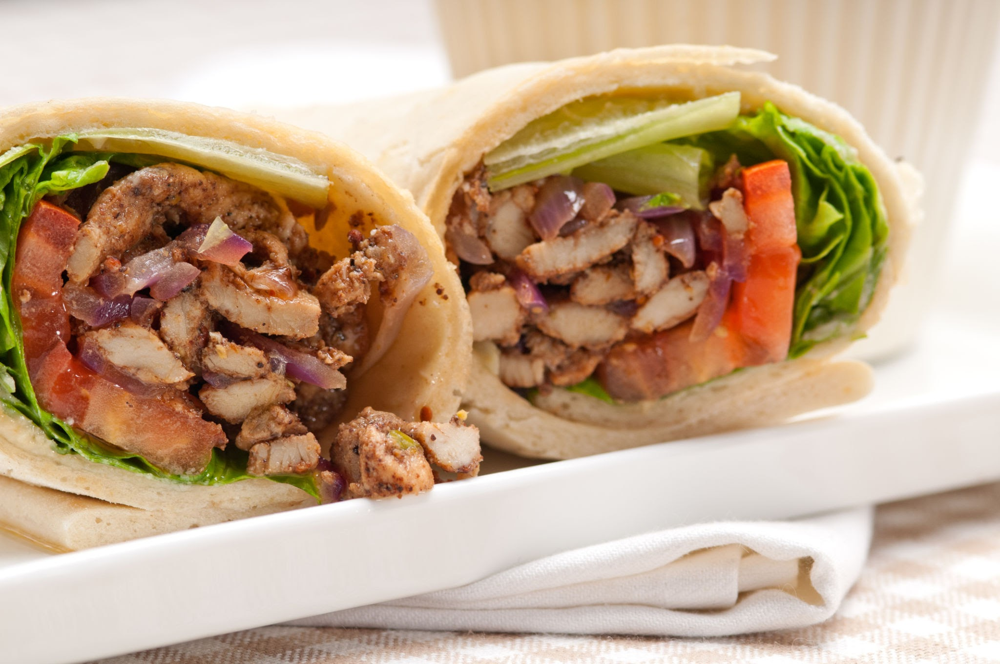

Shawarma

About Shawarma
Shawarma is a Middle Eastern dish that originated in the Levant region of the Arab world during the Ottoman Empire,consisting of meat
that is cut into thin slices, stacked in an inverted cone, and roasted on a slow-turning vertical spit.
Ingredients
- Chicken
- malt vinegar
- plain yogurt
- vegetable oil
- salt and pepper to taste
- mixed spice
- freshly ground cardamom
- skinless, boneless chicken thighs
- cup tahini
- minced garlic
- lemon juice
- olive oil
- chopped fresh parsley
- medium tomatoes, thinly sliced
- sliced onion
- shredded lettuce
- pita bread rounds
Steps
- In a glass baking dish, mix together the malt vinegar, 1/4 cup yogurt, vegetable oil, mixed spice, cardamom, salt and pepper.
Place the chicken thighs into the mixture and turn to coat. Cover and marinate in the refrigerator for at least 4 hours or overnight.
- Preheat the oven to 350 degrees F (175 degrees C). In a small bowl, mix together the tahini, 1/4 cup yogurt, garlic, lemon juice,
olive oil, and parsley. Season with salt and pepper, taste, and adjust flavors if desired. Cover and refrigerate.
- Cover the chicken and bake in the marinade for 30 minutes, turning once. Uncover, and cook for an additional 5 to 10 minutes,
or until chicken is browned and cooked through. Remove from the dish, and cut into slices.
- Place sliced chicken, tomato, onion, and lettuce onto pita breads. Roll up, and top with the tahini sauce.